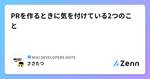
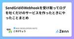

MIXI DEVELOPERS NOTEのフィード
https://zenn.dev/p/mixi
株式会社MIXIのZenn版エンジニアブログです。実務で得た知見や個人的に調べたことなど思い思いに発信します。
フィード
Hydra + PyTorch Lightningを使ったDeep Learning モデル構築テンプレート紹介
MIXI DEVELOPERS NOTEのフィード
始めにこれはMIXI DEVELOPERS Advent Calendar 2024の8日目の記事です。こんにちは、みてねプロダクト開発部Data Engineeringグループの kittchy です。現在、MLエンジニアとしてML解析パイプラインの整備やMLモデルの構築などを担当しています。その中でも特に研究開発の一環として、PyTorchを用いたモデルの構築や学習を行っています。本記事では、PyTorchによるDeep Learningモデルの学習において、私が最近よく使用している便利なツールであるHydraとPyTorch Lightningの紹介を行います。また、as...
2日前

闇バイト強盗の事案からオンラインサービスの認証強化について考えた話 3
3
MIXI DEVELOPERS NOTEのフィード
ritou です。MIXI DEVELOPERS Advent Calendar 2024 12/3の記事です(書くのだいぶ遅れましたすみません)https://qiita.com/advent-calendar/2024/mixi最近は社内のサービスから利用されるID管理機能を担当しています。当然ながら、単一サービスにおけるID管理機能複数サービスが利用するID基盤が提供する機能というのは求められる要件も変わります。どのサービスにも求められる機能もあれば、特定のサービスのみに求められる機能もあります。あることを実現したいとなったときにID基盤がどの機能をどの形で提供...
5日前

PRを作るときに気を付けている2つのこと 1
MIXI DEVELOPERS NOTEのフィード
!これは MIXI DEVELOPERS Advent Calendar 2024 の5日目の記事です。 はじめにこんにちは！毎日寒いですね！昨日に引き続き、みてねチームでCREとして働いているささたつからお届けします。さて、エンジニアは日々、PRをレビューしたり、レビューしてもらったりしますよね？この記事では、僕がPRを作るときに気を付けていることを2つ、紹介します。 ひとつのことだけをやるまずはこれ。1つのPRに複数の変更を混ぜない、です。1つのPRには「ひとつのこと」だけを含めるべきです。あれもこれも、、と複数の変更を混ぜてしまうと、こんな問題が発生します。...
5日前

コードレビューでよくあったコメント9選 〜Terraform編〜 24
MIXI DEVELOPERS NOTEのフィード
!この記事は MIXI DEVELOPERS Advent Calendar 2024シリーズ2の4日目の記事です。 この記事についてkotapjp さんの記事「Go初学者へのコードレビューでよくあったコメント20選」やriddle_tec さんの記事「コードレビューでよくお願いする、コメントの追加のパターン7選」が好評だったようなので、便乗して「Terraform初学者へのコードレビューでよくあったコメント9選」を書いてみました。https://zenn.dev/mixi/articles/f07be7f476e2f3https://zenn.dev/mixi/art...
6日前

SendGridのWebhookを受け取ってログを吐くだけのサービスを作ったときにやったことまとめ 1
MIXI DEVELOPERS NOTEのフィード
!これは MIXI DEVELOPERS Advent Calendar 2024の4日目の記事です。 はじめにみてねプロダクト開発部 プラットフォームグループ CREチームのこすげです。この記事ではSendGridのWebhook機能を使ってログをBigQueryに保存して計測、可視化までできるようにしたときにやったことをまとめた記事になります。当初は適当にHTTP受け取れるCloud Run使ってチャチャっと作ればいいかなーと思っていました。ですが、CREチーム内で色々すり合わせ行くうちに考えないといけないや、作る前に知っておかないといけないことなど出てきて、サービス...
6日前

コードレビューでよくお願いする、コメントの追加のパターン7選
MIXI DEVELOPERS NOTEのフィード
同僚が書いた Go初学者へのコードレビューでよくあったコメント20選 では、Go初学者へのコードレビューでよくあったコメント20選を紹介しました。今回は私が コードレビューでよくお願いするコメント追加のお願い について紹介します。 前提：コメントを書いて欲しいわけコードレビューでコメントを書いて欲しい理由は以下の通りです。プロダクト、サービスの持続可能な開発を支えるため人が入れ替わっても開発の迷いを可能な限り減らすため!PoC 開発や、短い期間で終わる開発であれば必要性は低いですが、持続可能な開発を行う場合はコメントを書くことが重要だと考えています。 具体的なコ...
25日前
Go初学者へのコードレビューでよくあったコメント20選
MIXI DEVELOPERS NOTEのフィード
はじめにこんにちは、ソーシャルベッティング事業本部 海外ベッティング事業部の山崎です。本記事では、Effective GoやGoogle のスタイルガイド、Code Review Commentsといった公式資料、Future Architectの記事などを参考に、Go を初めて触る開発者を対象にした汎用的なレビューコメントの 20 選を紹介します。大きく以下の４つのセクションに分けました言語仕様に関わる内容標準パッケージの使い方エラーの扱い方単体テスト!レビューを受ける側のスキルセットは他の言語での開発経験があるが Go を業務でまあり使ったことがない開発者を...
1ヶ月前
初めてEMになった時にやって良かったこと
MIXI DEVELOPERS NOTEのフィード
はじめにminimo事業部で EM をしている本間です。ある日マネジメントの仕事に挑戦してみないかと言われてからはや半年が経過しました。初めてのマネジメント職は想像以上に難しく大変なこともあったのですが、半年経ってこれはやって良かったと思うことを書いていこうと思います。 経歴 & 自己紹介2018年に新卒で MIXI に入社し、最初3年半は CRE (Customer Reliability Engineer) として Customer Support の業務改善を、その後新規事業に異動しサーバーサイドエンジニア兼プロジェクトマネージャー（何でも屋さん）として働い...
1ヶ月前
Camel-AIのCamelを触ってみた
MIXI DEVELOPERS NOTEのフィード
Camel-AIとは🐫 CAMELとは、AIの振る舞いを研究するためのオープンソースの研究グループです。https://www.camel-ai.org/ CAMELが目指していること：AIの能力の成長過程を解明することAIの行動パターンを理解することAIがもたらす可能性を探ることAIに関連するリスクを特定することこれらの研究は、大規模な実験を通して行われています。 CAMELが開発・提供している研究ツール：AIエージェント（自動で作業を行うAI）タスク（AIに与える課題）プロンプト（AIへの指示方法）モデル（AIの基盤システム）シミュレーション...
1ヶ月前
MySQL 8で、テーブルキャッシュを無効にしてクエリ時間の検証をする方法（マサカリコメント募集）
MIXI DEVELOPERS NOTEのフィード
はじめにこの記事ではマサカリコメントを募集しています。良い方法をご存じの方はコメントください。この記事内では、クエリ文内に [xxxx] のようなプレースホルダを使っています。実際のクエリ文では、 [xxxx] の部分を適切な値に置き換えています。 やりたいことMySQL8 を利用しているサーバーアプリケーションにおいて、新機能開発によって既存のテーブルに対してこれまで投げたことない DB クエリを投げるような実装を行ないたいため、そのクエリがスロークエリにならないかどうかをあらかじめ検証することにしました。本番の同テーブルは億レベルのレコード数があり、このデータを本...
1ヶ月前
リファクタリングより効く、コードを綺麗に保つ方法
MIXI DEVELOPERS NOTEのフィード
機能を削除していますか？機能開発をしていますか？ほとんどの方は 「はい」 と答えるでしょう。プロダクトやサービス開発に携わっている方は、日々機能の追加や改善を行っていると思います。では、機能の削除 はされていますか？なかなか 「はい」 と答えるのは難しいかもしれません。中には、外部サービスの利用料を減らすため・外部サービスの終了などの理由で機能を削除することはあるかもしれません。しかし、この記事では 「開発者が主導で機能を削除する」 ことについて紹介します。 なぜ機能を削除するべきなのか？機能を削除することによって、以下のようなメリットがあります。 開発チー...
2ヶ月前
1週間でできた！ Flutter+SQLite で全文検索機能を使った話
MIXI DEVELOPERS NOTEのフィード
こんにちは。MIXI 開発本部 SREグループの riddle です。最近私は 「イベント情報を掲載し、チケット購入ができるアプリ」 を運用しています。これまでアプリ内に検索機能がなく、不便だなーと思っていたので、サクッとβ版を作ってみました。※なおこの機能は、2024/09/20時点で本番にリリースされています。 最終的に作ったものアプリ起動時/定期的に Google Cloud Storage の全文検索用のデータ(数MB)をダウンロードユーザがアプリ内でダウンロードしたデータを検索検索時にネットワークを経由しないためオフライン検索が可能 ですし、 検索もとても速...
3ヶ月前
モンストの新機能実装にAgonesとOpen Matchを採用しました
MIXI DEVELOPERS NOTEのフィード
モンストサーバチームの徳森です。モンスターストライクでは2024/8/9にスクランブルユニバースをリリースしました。スクランブルユニバースは最大8人でリアルタイムにクエストのクリア時間を競うモードです。これを実現するためには、条件に合わせたユーザーをマッチングする仕組みと、ユーザー間の通信やゲームの進行を制御するゲームサーバを管理する仕組みが必要です。今回はこれらの仕組みを構築するために、Open MatchとAgonesを採用しました。この記事ではその構成について記します。 構成の全体像以下がスクランブルユニバースにおけるバックエンドのおおまかな構成図になります。Op...
3ヶ月前
ファインチューニングとRAGの違いについて
MIXI DEVELOPERS NOTEのフィード
はじめに生成AIの進化が加速する中、その性能を向上させる手法として「ファインチューニング」と「RAG（Retrieval-Augmented Generation）」が注目を集めています。これらの技術は、AIモデルをより賢く、効率的に、そして特定のタスクに適したものにする上で重要な役割を果たしています。しかし、一見似ているように見えるこれらの手法は、実際にはまったく異なるアプローチを取っています。この記事では、ファインチューニングとRAGの違いを詳しく解説し、それぞれの特徴、メリット・デメリット、そして具体的なユースケースを紹介します。AIエンジニアや開発者はもちろん、AIサー...
4ヶ月前
Webサイトを要約する便利Slackアプリを作って、社内で超簡単に運用する技術
MIXI DEVELOPERS NOTEのフィード
最近よくある生成AIを使ったやつです。lirlia/web-summarizerSlack DM に URL を投稿すると要約してくれます。Web だけではなく PDF も要約できます。裏側は Azure OpenAI(*1) を叩いているだけなので、実際に社内で提供するにあたり工夫したことを紹介します。*1 社内で発行するのに Azure OpenAI の方が楽ちんなので Slack アプリのアーキテクチャ社外の向けのネットワーク(*2)に所属する Windows PC の中で WSL+Docker で動かしています。 そしてSlack とは SocketM...
4ヶ月前
XFLAG ID基盤のモダン化とMIXI IDへの移行
MIXI DEVELOPERS NOTEのフィード
はじめに開発本部MIXI M事業部の@k-asmです。2024年4月18日に、モンスターストライクのプレイデータバックアップに利用していた「XFLAG ID」の新規登録を停止し、新たに「MIXI ID」の新規登録が始まる旨のアナウンスがありました。https://www.monster-strike.com/news/20240418_7.htmlXFLAG IDとは、モンスターストライクのバックアップやモンストTICKETなど、MIXIのサービスを利用する際に利用されていた共通ID基盤です。XFLAG IDの機能開発は2018年を境に止まっており、必要最低限の開発をしながら...
4ヶ月前
24新卒技術研修で出てきたおすすめ読書・記事
MIXI DEVELOPERS NOTEのフィード
はじめに 自己紹介こんにちは。開発本部CTO室クライアントグループの太田です。モンソニ！プロジェクトに配属した駆け出しクライアントエンジニアです。モンスト大好きキッズからエンジニアになるという特殊な進路を歩んだ私ですが、またそれは別の機会に話しましょう。 おすすめ読書・記事をまとめるにあたった経緯【2024年版】MIXI 新卒向け技術研修の資料・動画を公開しました！上記リンク新卒研修紹介ページです。MIXIといえば新卒研修！というイメージを持たれてる方もいるのではないでしょうか？（違うか）今回私が社内のDocBaseに、研修中に出てきたおすすめ読書・記事をまとめる...
4ヶ月前
PydanticでQueueメッセージを型定義する
MIXI DEVELOPERS NOTEのフィード
みてね事業部 Data Engineeringグループに所属しているkittchyです。MLエンジニアとして、ML解析器の整備、精度改善などの業務に携わっています。 家族アルバムみてね「家族アルバム みてね」（以下「みてね」）は、スマホで撮った子どもの写真や動画をかんたん共有、整理でき、家族で楽しく会話したり成長をふりかえることができるサービスです。みてねData Engineeringグループでは顔検出や画像の分類情報など、Machine Learning (ML) の技術を利用してアップロードされた画像を解析し、みてねのさまざまな機能に活用しています。 ML解析器につい...
4ヶ月前
Identity Aware Proxy で保護された Web アプリで、Scheduler からアクセスする＆アクセスユーザーの認証をする
MIXI DEVELOPERS NOTEのフィード
注意2024-07-26 に、この記事の内容が覆る追記をしました。 モチベーション社内で利用するツールを実装＆Google Cloud にデプロイするため、以下のような Cloud Run + Cloud Load Balancing + Identity Aware Proxy の構成を考えます。https://cloud.google.com/iap/docs/enabling-cloud-run の手順で作れる。この構成の上で、「ユーザーには使わせたくないが、 Cloud Scheduler からはアクセスできるような API /automated/job ...
5ヶ月前
【2024年版】MIXI 新卒向け技術研修の資料・動画を公開しました！
MIXI DEVELOPERS NOTEのフィード
こんにちは。開発本部 たんぽぽ室 DevRel グループの杉田です。遅ればせながら、今年も新卒向け技術研修の資料と動画を公開しました。MIXI の新卒向け技術研修は、一部の科目を除いて、実際の開発現場で活躍する MIXI のエンジニアが講師を務めており、現状に合わせて見直しも行われていますので、最新の情報で学習することができます。是非、自己学習や勉強会の教材として、スキルアップや成長支援にお役立てください。<<おねがい>>公開している資料や動画は、是非、勉強会や社内の研修などにご自由にお使いいただければと思いますが、以下のような場でのご利用はご遠慮ください...
5ヶ月前